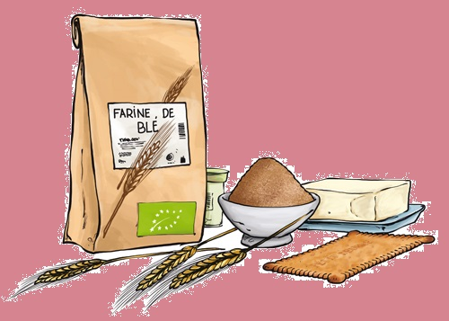
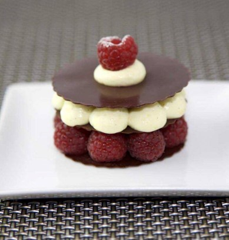
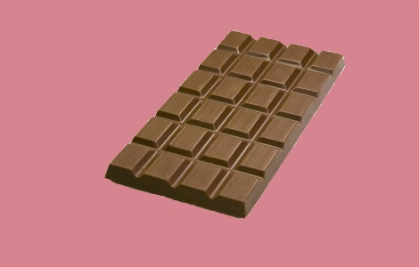

Mille-feuille chocolat framboise
| Level | Preparation | Cooking | Price | Quantity | ||||||||||||
 |
|
|
|
|
|
|
|
|
|
|
|
|||||
|---|---|---|---|---|---|---|---|---|---|---|---|---|---|---|---|---|
| Medium | 1h30 | None | Cheap | 6 persons |
|  | Ingredients | Equipment used | |
| 351g of dark chocolate | clingfilm (width: 30cm) | ||
| 2 baskets of fresh raspberries | non-stick plate 40x30cm | ||
| 1 branch of fresh mint | spatula type maryse (25cm) | ||
| 3dl of crème fraiche with a fat level of 30% | curved spatula 15cm | ||
| 70g of icing sugar | piping bag (40cm) |

- To realise this recipe begin by preparing all the ingredients.
- Wrap of clingfilm the non-stick plate 40x30cm.
- In a bowl, put the chocolate. Melt it a few minutes in the micro-wave at a moderate power.
- Mix withe the spatula type maryse in order to get melted chocolate without lump.
- Pour the melted chocolate on the non-stick plate and spread it with the curved spatula.
- Put the non-stick plate in the fridge.
